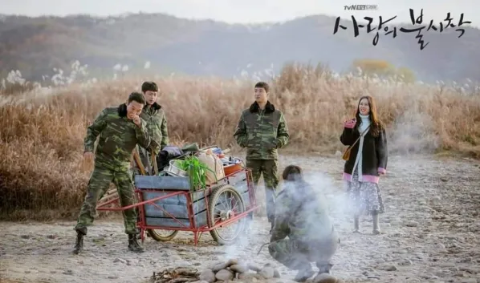
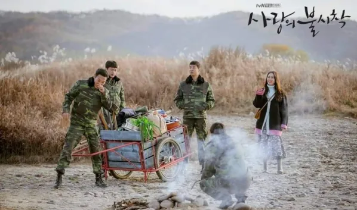
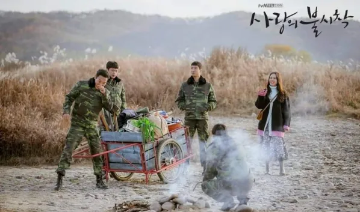

Pousando no Amor é o premiado dorama da Netflix lançado em dezembro de 2019 e que logo recebeu elogios do público e da imprensa especializada. A série tem 16 episódios de cerca de 90 minutos cada, e mostra a paixão entre um oficial da Coreia do Norte e uma empresária sul-coreana que faz um pouso de emergência no país vizinho. O romance é estrelado por Hyun Bin e Son Ye-jin, que também formam um casal na vida real.

Além do romance, a série possui um foco muito grande na amizade, retratando a forma como os colegas de Hyuk colocam a vida em risco para proteger o casal. Há também muitas cenas de ação, tragédia, suspense e comédia com diversos personagens secundários marcantes.
Pousando no amor é um K-Drama muito bem desenvolvido, após muitas pesquisas por parte da autora. Inclusive, ela entrevistou um desertor norte-coreano com o objetivo de tornar a série o mais realista possível, sem ofender os vizinhos. Também foi evitada a menção ao nome do Presidente da Coreia do Norte quando os personagens discutiam sobre os líderes do país. Até mesmo os figurinos foram cuidadosamente pensados. Os broches de identificação dos cidadãos norte-coreanos, por exemplo, foram elaborados um terço menores que o original. Ainda sim, é possível notar uma grande crítica a ambas as nações.
A obra reflete sobre a dor causada aos países devido a separação estabelecida há décadas. Caso se emocione facilmente, é recomendável que leve um grande pacote de lencinhos antes de assistir. O abandono familiar, depressão e suicídio também são temas importantes e delicadamente abordados. É preciso silenciar o costume à fórmula ocidental de produções para realmente apreciar o K-Drama. Com um foco maior na beleza das expressões humanas e no destino, os dramas asiáticos em geral possuem um ponto único de narrativa. Isso pode causar estranhamento em quem está acostumado aos roteiros norte-americanos. Por isso, “Pousando no amor” é uma ótima oportunidade para ampliar os campos de visão.
 
